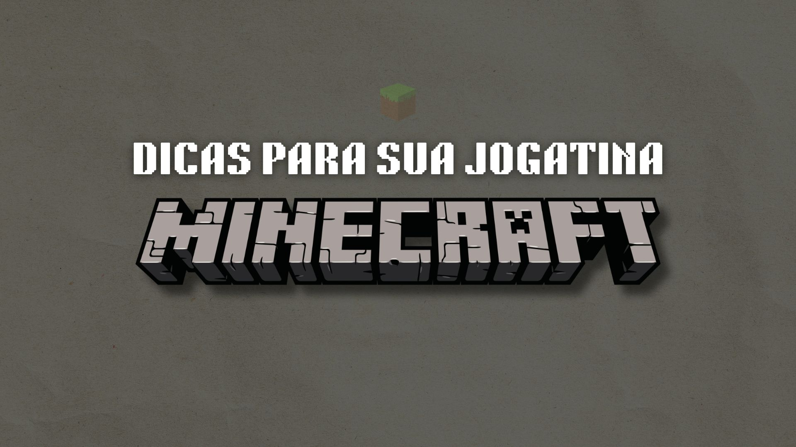

Seja muito bem vindo ao nosso site Minemania Brasil!
Aqui, abordaremos os principais conteúdos do mundo do Minecraft!

[DICAS PARA SUA GAMEPLAY]a
Sempre carregue tochas
A iluminação é crucial, especialmente ao explorar cavernas ou minas. Além de permitir que você enxergue melhor, as tochas impedem que monstros, como Zumbis e Creepers, apareçam em áreas escuras. Sempre tenha carvão e gravetos no seu inventário para fazer tochas extras quando necessário.
Assim que começar, construa uma base simples perto de recursos básicos, como árvores e água. Certifique-se de que a base seja bem iluminada e esteja cercada por paredes ou cercas para proteger contra monstros à noite. Uma cama é essencial para definir seu ponto de renascimento e avançar para o dia mais rapidamente.
No Survival, use Redstone para criar portas automáticas ou fazendas automáticas. No Criativo, teste sistemas mais complexos, como elevadores ou máquinas de redstone.